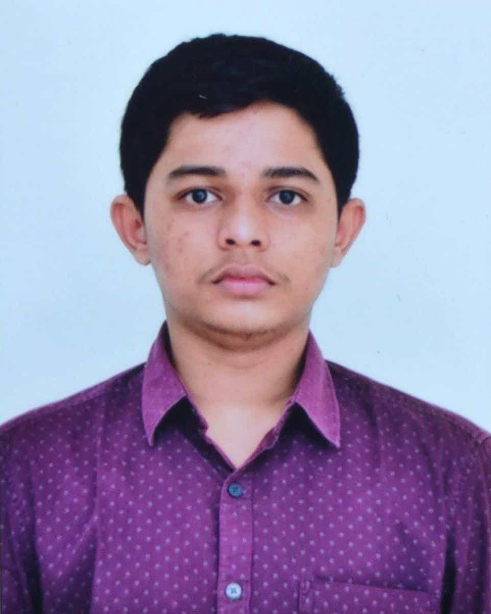

Maruthi Madhu Kiran Tiruvaipati

I Madhu S/O Suri and Prasanna from a village named Vinukonda district of
Guntur,Andhra
Pradesh.
I cleared by Advanced exam so i got a seat in one of the prestigiuos College of India,IIT
Goa
My Hobbies are reading books,Playing Games like Basket ball, Talking to friends and as well as playing
mobile game
Education
| Year of Graduation |
Degree |
Institution |
| 2024 |
B. tech. |
Indian Institute of Technology Goa |
| 2021 |
12th standard |
Narayana College Vijayawada |
| 2019 |
10th standard |
Little Flower School Guntur |
1st-year Courses @ IIT Goa
Autumn 2021-2022
- CS101:
Introduction to Computing by Dr. Clint P. George
- MTH101:Calculus by Dr. Sandipan De
- CH101:Physical Chemistry by Dr. Mantu santra and Dr.Siva Subramanyam Iyer
- CH102:Inorganic and Organic Chemistry by Dr. Raja Mitra and Dr.Rishikesh Narayan
- CH104:Chemistry Lab II byDr.Siva Subramanyam Iyer
- PH101:Quantum Physics and Application by Dr.Santosh Kumar das and Dr. Sudipta
- MC100:Introduction to Profession by Dr. Abhitosh Upadhyay
- HS101:Foundation Programme in Humanities and Social Sciences by Dr. Sabiha Hashami
- NO102:National Sports Organization by Dr. Santosh Upadhyay
Spring 2022
- CS102:
Software Tools by Dr. Clint P. George
- MTH1021:Basic Linear Algebra by Dr. Kalpesh Haria
- PH102:Electricity and Magnetism by Dr.Vaibhav Wasnik
- PH104:Physics Lab II by Dr.Vaibhav Wasnik
- BIO101:Introductory Biology by Dr. Sreenath Balakrishnan
- EE101:Introduction to Electrical and Electronics Engineering by Dr. Sheron
- ME102:Engineering Graphics and Introduction to Computer-Aided-Drawing by Dr.Aniruda ambekar
- NO102:National Sports Organization by Dr. Santosh Upadhyay
Extracurricular activities, Awards, or Hobbies.
My Extracurricular activities, Awards, or Hobbies are:
- I play BasketBall Which is situated at
the center of our hostel in the evenings.
- We also have a gym, Indoor Badminton Court, Table tennis Court, Lawn tennis Court, Volley ball Court.
- I got an school award for BasketBall During my schooling
- as i alreday told that my hobbies are:
- Reading books
- Talking to friends
- Playing mobile Games